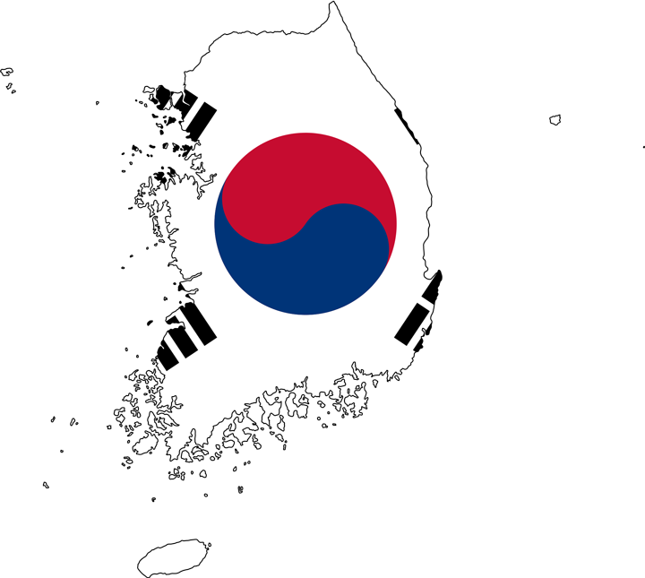

關於韓國 한국에 대해서
역사 歷史
大韓民國的歷史，經過人類歷學研究發現，早在 70 萬年前，朝鮮半島就有人類居住。這時期叫做史前時代。根據傳説，神話人物檀君於公元前 2333 年建立了韓國第一個王國~古朝鮮。之後，有幾個部族由滿州南部地區移到朝鮮半島。這時期叫做古朝鮮。朝鮮王朝建立於 14 世紀末期，儒教成爲國教，對於整個社會產生了重大的影響力。西元 1443 年發明了韓文字母。由於日本的侵略 (西元 1592 年，任辰倭亂) 和外國勢力的侵略使朝鮮開始走向衰退。西元 2000 年曆史性的南北韓首腦會談在北韓的首都平壤召開。朝韓分治後，大韓民國經歷了民主與獨裁統治的反復交替。
문화 文化
朝鮮戰爭後朝鮮半島的南北對峙導致了南北朝鮮現代社會化的差異，但雙方傳統文化卻一脈相承。大韓民國現代社會文化由朝鮮民族傳統文化與現代社會流行文化相結合衍生而來，1948 年朝鮮半島南北對峙以來，南北韓的現代文化出現不同的發展。大韓民國現代社會文化是朝鮮民族文化現代化的產物。隨着大韓民國經濟和社會的發展，韓國人的衣食住行等生活方式也發生了變化，從而構築了大韓民國現代文化。大韓民國文化在亞洲和世界的流行被稱爲韓流。

다이어트 飲食
韓式料理以清淡爲主，較少油，但多辣。有各式各樣的韓式料理。從古代開始，最主要的主食是米飯。近期，韓國的飲食和各種的蔬菜、肉類、魚類一起組成。泡菜 (發酵的辣白菜), 也是韓國的文化之一。韓國人擺餐桌的特色是全部的飲食同時擺出。傳統韓國飲食分別爲：米飯和粥、湯、砂鍋、燻和燉食品、拌菜、腌海物 (用鹽腌好的海産品)、烤食品、煎餅、餃子。拌飯分兩種：鐵鍋拌飯和石鍋拌飯。鐵鍋拌飯是冷的，但石鍋拌飯是熱的。拌飯是冷的，所以，菜類還是新鮮的，但有的人喜歡蔬菜的料。因爲有些蔬菜的料沒有被煮過，您就能品嘗到配料的新鮮感。

경제 經濟
大韓民國的經濟是世界主要經濟體之一，經濟合作與發展組織（OECD）成員，亞洲四小龍之一。大韓民國同時也是未來 11 國中唯一一個發達國。據世界銀行的統計，大韓民國 2014 年國内生產總值按國際匯率和相對購買力指標計算在世界排名皆位居第 13 位。大韓民國是世界第 6 大出口國和第 9 大進口國。截至 2015 年 3 月，大韓民國已與包括美國、歐盟、中國在内的 52 個國家簽訂了 14 個自由貿易協定，其「經濟領土」規模達世界 GDP 的 73.5%. 自 20 世紀 60 年代，大韓民國根據本國比較優勢，積極參與國際分工，使經濟發展進入了快速發展的軌道。


韓國資料 한국에 관한 정보

國名 나라 이름
韓國，南韓，大韓民國

國旗 국기
太極旗

國歌 국가
愛國歌

國花 국화
無窮花
人口 인구
51,279,478 (2019)

首都 자본
首爾

主要城市 주요 도시
首爾、釜山、仁川、
光州、大邱、大田、
慶洲、釜山

貨幣 통화
韓元、 ₩, KRW
韓國氣候 한국 기후
 春 봄
春 봄
春季爲 3 月初-5 月底
日夜溫差大，早晚涼，白天溫暖。請記得要攜帶薄長袖和輕便的外套。春天也是韓國的櫻花季節。 夏 여름
夏 여름
夏季爲 6 月初-9 月底
高溫潮濕，多帶涼快夏衣，並帶輕便的外套，避免天氣突然變化。7-8 月是梅雨季，多雨的時候。須帶雨具。秋季爲 9 月中-11 月中
開始刮涼風，晴朗的天氣較多，可多外出。秋季和春季一樣，日夜溫差大。要記得攜帶外套、圍巾和絲巾。 冬 겨울
冬 겨울
冬季爲 11 月底-2 月底
冬季的氣溫都在攝氏零度以下，下雪的機率比較高。要攜帶保暖的厚 衣物、圍巾，手套，等。景點介紹 어트랙션 소개

北村韓屋村 북촌한옥마을
從以前開始，北村韓屋村是衆所皆知的兩班貴族居住的地方，這裡的住宅是朝鮮時代的瓦屋。一直到今天，還是全部保留過去上流階層的建築形式，有大宮闕之間的傳統式的韓屋的建築。遊客可欣賞有 600 年歷史都市的迷人風景。

景福宮 경복궁
景福宮是太祖李成桂於西元 1395 年下令新建的朝鮮王朝法宮，和東闕 (昌德宮)、西闕 (慶熙宮) 相較之下位置較北，所以，又被稱爲「北闕」。景福宮 (史蹟第 117 號) 是五大宮闕中，規模最大。最美麗的宮闕的建築設計。

宏大街道 홍대거리
大韓民國的年輕族羣的街頭文化象徵，主要以弘益大學爲中心點。街道上聚焦着反映最新潮流的餐廳、咖啡館、夜店、和服飾店。遊客也可以參觀宏益大學。街道不時會有人唱歌，等，吸引許多的人。

青瓦台 청와대
青瓦台是大韓民國總統的官邸。主要由本館、迎賓館、春秋館、綠地園、無窮花花園、七宮等建築物所組成。大韓民國總統府精神的本館屋頂，使用了共約 15 萬塊青瓦所築成，和曲線條屋頂相映成趣，爲要呈現出國家的美麗，使青瓦台得名。

大韓民國歷史博物館 대한민국역사박물관
大韓民國歷史博物館於 2012/12/26 開幕。它，紀錄來自 19 世紀末被迫貿易通商的開港期到如今。大韓民國如何成立，持續發展的足跡。博物館設立宗旨，在透過展覽、教育、調查研究與資料收集，爲了與國民共享在苦難與逆境中成長的韓國的歷史。

首爾仁川國際機場 서울인천국제공항
仁川機場於 2001/3/29 正式開幕。仁川機場的第二航廈於 2018/1/18 正式啟用，爲了紓減第一航廈壅擠的人潮。第二航廈的整體建築非常奪目，也可看到許多綠色的植物。第二航廈有室內花園、洗衣店、傳統韓國體驗中心、機器人，等。來第二航廈就要到韓式料理美食街用餐。

漢江公園 한강공원
汝矣島漢江公園集結政治、金融、媒體的重心－汝矣島之上。方便的大衆運輸，如，地鐵、公車等，成爲上班族和首爾市民時常前往的地方。汝矣島漢江公園春天不只可以欣賞櫻花，秋天也有世界煙火節之外，還有馬拉松大會等多種活動，乃擁有豐富活動與景點的公衆休息活動空間。

東大門設計廣場 동대문디자인플라자
東大門設計廣場 (DDP) 位置於東大門歷史文化公園地鐵站的複合文化空間，它名字拼成 Dream, Design, Play. 這裡有蠻多的展覽、服裝秀、研討會、會議等還外國内的重要活動的舉辦地。同時，也帶動新品問世與時尚趨勢。

韓國民俗村 한국민속촌
韓國民俗村與首爾南方的距離約 41 公里，在京釜高速公路水原 I.C 往東南方 3 公里處。村内保存了民族文化資源，且作爲延續後代更加解固有場所可以學習文化的教育，以及專爲着海内和海外遊客介紹韓國傳統文化而建立的。本村於 1973 年正式破土，隔年竣工落成。

南山首爾塔 남산서울타워
首爾塔爲韓國第一個高塔型的觀光景點。高爲 236.7m 的塔，海拔爲 243m 的南山上，再加上高度 480m. 成爲東南亞最高的塔。1980/10/15 正式對外開放首爾景觀台。也因此，成爲首爾著名的觀光景點，也受遊客的喜愛。2005/12/9 再度重新翻修，變爲華麗耀眼的南山首爾塔。

慶熙宮 경희궁
慶熙宮又叫作西門内宮闕，或是西邊的宮闕，也被稱爲西闕。它一直做爲王族的私宅，直到光海君 1616 年，傳聞西門内的位置具有王氣，是爲壓制其王氣。另外建了離宮，名字爲敬德宮。但，因仁祖反正 (朝臣擁戴新君主即位) 後光海君被廢，1760 年時，將敬德宮改名爲慶熙宮。

龍頭山公園 용두산공원
龍頭山 (49 公尺) 的位置在釜山市區内的丘陵，是釜山 3 座名山的其中之一。以前在龍山上可從生長繁茂的松樹群的縫隙看見大海，所以，稱爲松峴山。但之後，因着其山勢貌似出海蛟龍的龍頭，給大家一種吞噬來自日本渡海的倭寇的形象。因此，又有個名字叫做龍頭山。

松島天空步道 송도 구름산책로
因爲釜山靠近海邊，所以，釜山自然會有許多地美麗的海邊景點可以放進行程裡。比較知名的三個大海水浴場莫過於就是：海雲台海水浴場、廣安里海水浴場、跟松島海水浴場，也是來到釜山一定要訪的地方。因爲距離和交通的關係，因此，建議大家可以把這兩個景點放在同一天玩。

五六島海上天空步道 오륙도 스카이워크
五六島 Skywalk 一帶曾經名字叫 seungdumal, 原本因形如馬鞍被稱爲 seungdumal, 漢字拼音接近「乘頭馬」。之後，末字發音的因素，才變成韓文的 mal. 當地的海女和居民都把這裡稱爲 challokkae, 韓文的意思瘸腳。

甘川洞文化村 부산 감천문화마을
甘川文化村的位置是在山的腳下，呈階梯式聚集在一起的房子以巷弄爲中心點所形成的漂亮村落，被大家稱爲釜山的馬丘比丘。在這村裡，遊客能看得到各式各樣的主題小房子，和巷弄内的早型擺設，凸顯出村民的創意。

松月洞童話村 송월동동화마을
松月洞童話村位於仁川市的中國城附近，且利用花朵和大家所熟悉的童話故事爲主題，爲了打造童心未泯的童話村。色彩繽紛的牆壁畫上，可以看到小紅帽、小木偶、白雪公主等童話故事的主角。雖然它是牆壁畫，但是增加了 3D 元素立體的呈現，讓來到這裡的遊客可以多多地投入在這個童話王國的氣氛的當中。

松島中央公園 송도중앙공원
仁川市的松島中央公園的位置在松島國際都市的海水公園，也是在灰色高樓大廈林立的城市中。這是爲了仁川市民帶來綠意的樂園。人工的水道和水上的計程車行駛其間。公園被分爲散步的公園、露台庭園、草地園等，一共有五種不同的主題庭園，爲了呈現出不同美麗的風景和風情。